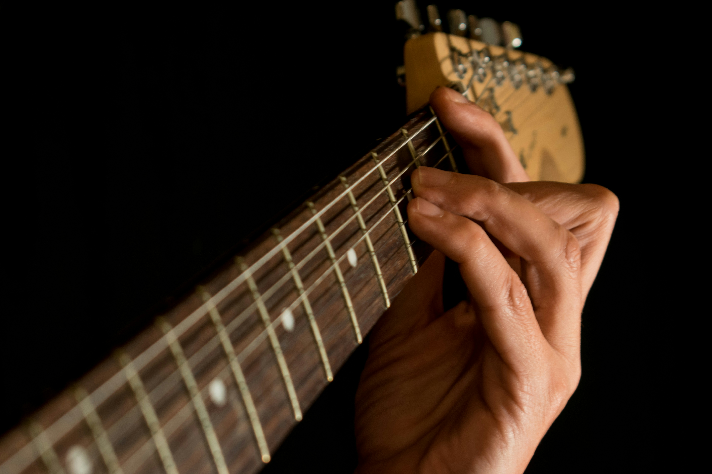
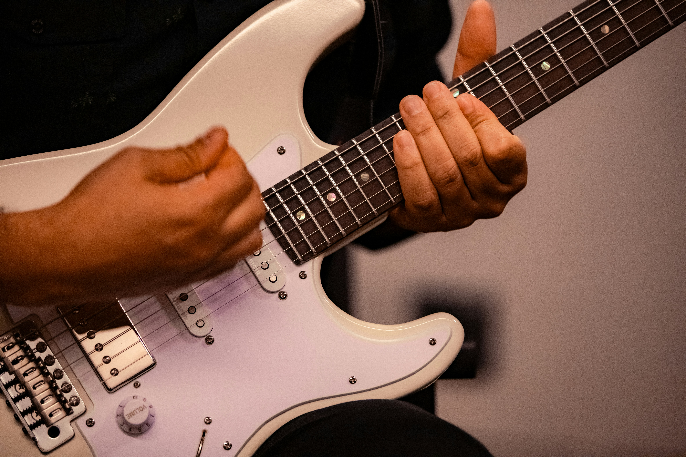
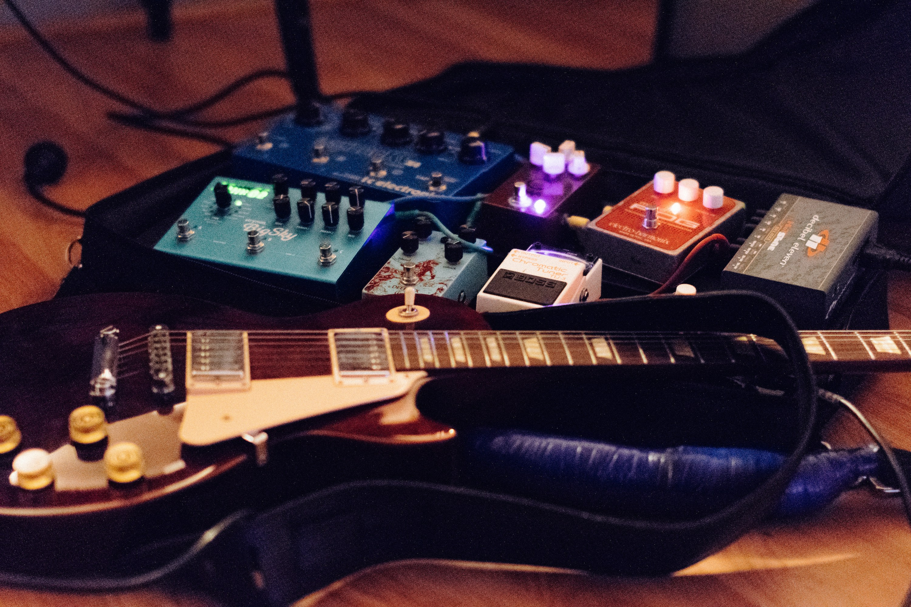

Domine a Guitarra Elétrica
Bem-vindo ao maior portal de ensino de guitarra online. Nosso objetivo é transformar iniciantes em guitarristas completos através de lições estruturadas, teoria aplicada e muita prática. Explore nossos conteúdos de destaque abaixo.
Conteúdos em Destaque

Fundamentos para Iniciantes
Aprenda a ler tablaturas, conheça a anatomia do instrumento e monte seus primeiros acordes básicos hoje mesmo.

Técnicas Avançadas
Evolua sua velocidade e expressão com aulas focadas em Palhetada Alternada, Sweep Picking e Tapping.

Timbre & Equipamentos
Descubra como configurar seu amplificador, escolher os pedais certos e extrair o melhor som da sua guitarra.